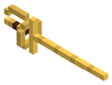 | Aguijón Real de Vespis | Cuerpo a cuerpo | 1 | 1 |
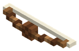 | Arco | Arco | 1 | 1 |
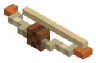 | Arco Corto de Fresno y Cobre | Arco | 1 | 1 |
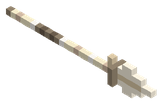 | Arpón de Hueso de Escila | Cuerpo a cuerpo | 1 | 1 |
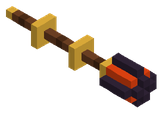 | Bastón de fuego | Bastón mágico | 1 | 1 |
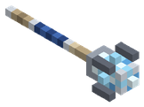 | Bastón de hielo | Bastón mágico | 1 | 1 |
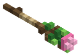 | Bastón de la naturaleza | Bastón mágico | 1 | 1 |
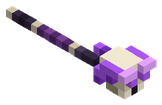 | Bastón de las sombras | Bastón mágico | 1 | 1 |
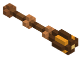 | Cayado de Ámbar | Bastón mágico | 1 | 1 |
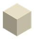 | Colmillo de Cerdaloth | Cuerpo a cuerpo | 1 | 1 |
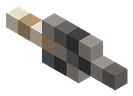 | Daga de Sílex Afilado | Cuerpo a cuerpo | 1 | 1 |
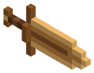 | Espada Ancha de Bronce | Cuerpo a cuerpo | 1 | 1 |
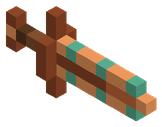 | Espada Corta de Cobre | Cuerpo a cuerpo | 1 | 1 |
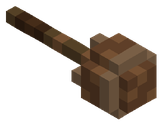 | Garrote Pesado Silvano | Cuerpo a cuerpo | 1 | 1 |
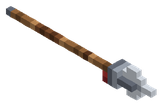 | Lanza | Cuerpo a cuerpo | 1 | 1 |
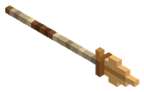 | Lanza de Caza de Bronce | Cuerpo a cuerpo | 1 | 1 |
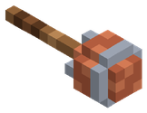 | Maza de Arcilla Cocida | Cuerpo a cuerpo | 1 | 1 |
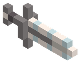 | Sable de Abordaje | Cuerpo a cuerpo | 1 | 1 |
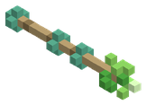 | Vara de Sauce y Cobre | Bastón mágico | 1 | 1 |
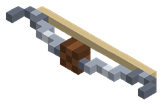 | Arco Recurvo Reforzado de Hierro | Arco | 12 | 2 |
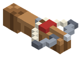 | Ballesta | Arco | 12 | 2 |
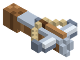 | Ballesta Pesada de Acero y Madera | Arco | 12 | 2 |
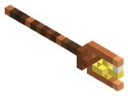 | Bastón del rayo | Bastón mágico | 12 | 2 |
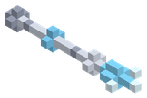 | Báculo de Plata Escarchada | Bastón mágico | 12 | 2 |
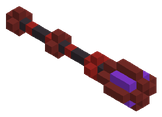 | Cetro de Hematita Sombría | Bastón mágico | 12 | 2 |
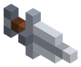 | Daga | Cuerpo a cuerpo | 12 | 2 |
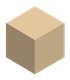 | Daga Cerámica Reforzada | Cuerpo a cuerpo | 12 | 2 |
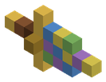 | Daga Sigilosa de Calcopirita | Cuerpo a cuerpo | 12 | 2 |
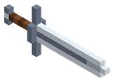 | Espada Larga de Acero | Cuerpo a cuerpo | 12 | 2 |
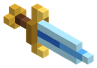 | Espada corta de cristal | Cuerpo a cuerpo | 12 | 2 |
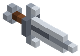 | Espada corta de hierro | Cuerpo a cuerpo | 12 | 2 |
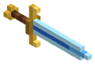 | Espada larga de cristal | Cuerpo a cuerpo | 12 | 2 |
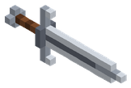 | Espada larga de hierro | Cuerpo a cuerpo | 12 | 2 |
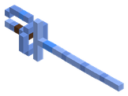 | Estoque de Plata Astral Alfa 0.5.2.1 · de pago | Cuerpo a cuerpo | 12 | 2 |
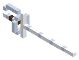 | Estoque de Plata Sagrada | Cuerpo a cuerpo | 12 | 2 |
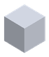 | Garras de Plata Pura | Cuerpo a cuerpo | 12 | 2 |
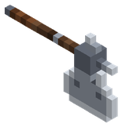 | Hacha de guerra | Cuerpo a cuerpo | 12 | 2 |
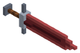 | Mandoble de Hematita Pesada | Cuerpo a cuerpo | 12 | 2 |
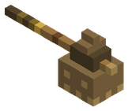 | Martillo Triturador de Vapor | Cuerpo a cuerpo | 12 | 2 |
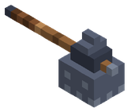 | Martillo de Guerra de Plomo | Cuerpo a cuerpo | 12 | 2 |
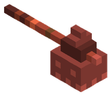 | Martillo de Guerra del Gólem | Cuerpo a cuerpo | 12 | 2 |
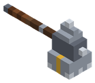 | Martillo de guerra | Cuerpo a cuerpo | 12 | 2 |
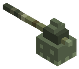 | Maza de Cadáveres de Plomo | Cuerpo a cuerpo | 12 | 2 |
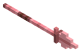 | Tridente de Coral de Calcopirita | Cuerpo a cuerpo | 12 | 2 |
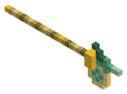 | Alabarda de Jade Ancestral | Cuerpo a cuerpo | 45 | 3 |
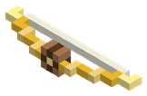 | Arco Solar de Oro y Topacio | Arco | 45 | 3 |
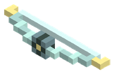 | Arco del Viento Veloz | Arco | 45 | 3 |
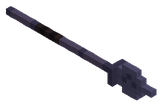 | Arpón de Obsidiana Marina | Cuerpo a cuerpo | 45 | 3 |
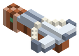 | Ballesta Perforante de Bauxita | Arco | 45 | 3 |
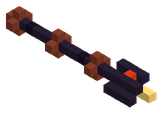 | Bastón de Obsidiana Ígnea | Bastón mágico | 45 | 3 |
| Cimitarra de Oro y Topacio Solar | Cuerpo a cuerpo | 45 | 3 |
| Cimitarra del Sol | Cuerpo a cuerpo | 45 | 3 |
| Colmillo Glacial de Skoll | Cuerpo a cuerpo | 45 | 3 |
| Daga Envenenada de Cinabrio | Cuerpo a cuerpo | 45 | 3 |
| Garras de Bauxita y Titanio | Cuerpo a cuerpo | 45 | 3 |
| Garras de Titano-Obsidiana Alfa 0.5.2.1 · de pago | Cuerpo a cuerpo | 45 | 3 |
| Guadaña de Obsidiana Negra | Cuerpo a cuerpo | 45 | 3 |
| Katana de Jade Manchada de Cinabrio | Cuerpo a cuerpo | 45 | 3 |
| Kopis de Electrum Solar Alfa 0.5.2.1 · de pago | Cuerpo a cuerpo | 45 | 3 |
| Kopis de Titanio Ligero | Cuerpo a cuerpo | 45 | 3 |
| Lanza Ceremonial de Jade Imperial | Cuerpo a cuerpo | 45 | 3 |
| Lanza Glacial de Hielo Fósil | Cuerpo a cuerpo | 45 | 3 |
| Mandoble Sísmico de Magnetita | Cuerpo a cuerpo | 45 | 3 |
| Tridente del Guardián Marino | Cuerpo a cuerpo | 45 | 3 |
| Arco Celeste de Aerolita y Mithril | Arco | 110 | 4 |
| Arco de Viento Puro | Arco | 110 | 4 |
| Arpón de Obsidiana del Ocaso | Cuerpo a cuerpo | 110 | 4 |
| Bastón de Tormenta de Electro Natural | Bastón mágico | 110 | 4 |
| Báculo de Jade Tronante | Bastón mágico | 110 | 4 |
| Báculo de Rubí Espinoso | Bastón mágico | 110 | 4 |
| Báculo del Chamán Fúngico | Bastón mágico | 110 | 4 |
| Cetro de Zafiro Glaciar | Bastón mágico | 110 | 4 |
| Cimitarra de Cristal Espejismo | Cuerpo a cuerpo | 110 | 4 |
| Daga de Obsidiana del Ocaso | Cuerpo a cuerpo | 110 | 4 |
| Daga del Ocaso de Morrigan | Cuerpo a cuerpo | 110 | 4 |
| Hoja Rúnica de Mithril | Cuerpo a cuerpo | 110 | 4 |
| Hoja Rúnica de Mithril de Escarcha Alfa 0.5.2.1 · de pago | Cuerpo a cuerpo | 110 | 4 |
| Hoja de Obsidiana del Ocaso | Cuerpo a cuerpo | 110 | 4 |
| Lanza Glacial de Hielo Azul Eterno | Cuerpo a cuerpo | 110 | 4 |
| Mandoble Llameante de Rubí y Basalto | Cuerpo a cuerpo | 110 | 4 |
| Martillo Neumático del Forjador | Cuerpo a cuerpo | 110 | 4 |
| Martillo de Guerra de Corazón de Basalto | Cuerpo a cuerpo | 110 | 4 |
| Maza del Gigante Jötunn | Cuerpo a cuerpo | 110 | 4 |
| Orbe de Electro Natural | Bastón mágico | 110 | 4 |
| Rifle de precisión | Arma de fuego | 110 | 4 |
| Aguijón Magnum .44 | Arma de fuego | 220 | 5 |
| Arco Estigio de Hielo Negro | Arco | 220 | 5 |
| Báculo Armónico de Amatista | Bastón mágico | 220 | 5 |
| Báculo Dracónico del Meteoro | Bastón mágico | 220 | 5 |
| Báculo del Sonido Armónico | Bastón mágico | 220 | 5 |
| Cetro de la Sangre de Hierro | Bastón mágico | 220 | 5 |
| Daga de Ácido Titánico | Cuerpo a cuerpo | 220 | 5 |
| Dagas Gemelas de Vitriolo Verde | Cuerpo a cuerpo | 220 | 5 |
| Espada Destructora de Adamantio | Cuerpo a cuerpo | 220 | 5 |
| Espada Gravitacional Alfa 0.5.2.1 · de pago | Cuerpo a cuerpo | 220 | 5 |
| Gran Hacha Fósil de Vorgrath | Cuerpo a cuerpo | 220 | 5 |
| Gran Hacha de Fósil Dracónico | Cuerpo a cuerpo | 220 | 5 |
| Gran Hacha de Hueso Colosal | Cuerpo a cuerpo | 220 | 5 |
| Guadaña de Cosecha de Cristal de Sombra | Cuerpo a cuerpo | 220 | 5 |
| Guadaña de Escarcha Estigia | Cuerpo a cuerpo | 220 | 5 |
| Lanza Solar de Oricalco | Cuerpo a cuerpo | 220 | 5 |
| Lanzacohetes | Lanzacohetes | 220 | 5 |
| Mandoble de la Devastación | Cuerpo a cuerpo | 220 | 5 |
| Martillo Sónico de Amatista | Cuerpo a cuerpo | 220 | 5 |
| Martillo de Ceniza Titánica | Cuerpo a cuerpo | 220 | 5 |
| Tridente del Rey del Océano | Cuerpo a cuerpo | 220 | 5 |
| Alabarda de Fulgurita y Tormentita | Cuerpo a cuerpo | 380 | 6 |
| Alabarda del Relámpago Celeste | Cuerpo a cuerpo | 380 | 6 |
| Arco Astral de las Constelaciones | Arco | 380 | 6 |
| Arco Celeste de los Siete Vientos | Arco | 380 | 6 |
| Arco de la Vía Láctea | Arco | 380 | 6 |
| Báculo de Fulgurita Celeste | Bastón mágico | 380 | 6 |
| Báculo de Oricalco Arcano | Bastón mágico | 380 | 6 |
| Cañón de Magma Primigenio | Arma de fuego | 380 | 6 |
| Cetro del Vacío Estelar | Bastón mágico | 380 | 6 |
| Espada Rompedora de Eras | Cuerpo a cuerpo | 380 | 6 |
| Espada del Génesis | Cuerpo a cuerpo | 380 | 6 |
| Garras de Astralita | Cuerpo a cuerpo | 380 | 6 |
| Gran Martillo del Marfil de Titán | Cuerpo a cuerpo | 380 | 6 |
| Guadaña de Singularidad | Cuerpo a cuerpo | 380 | 6 |
| Lanza de Fulgurita Pura | Cuerpo a cuerpo | 380 | 6 |
| Lanza de Fulgurita Submarina | Cuerpo a cuerpo | 380 | 6 |
| Lanza de Termo-Oricalco Alfa 0.5.2.1 · de pago | Cuerpo a cuerpo | 380 | 6 |
| Mandoble Devorador de Aethelgard | Cuerpo a cuerpo | 380 | 6 |
| Mandoble Devorador del Vacío | Cuerpo a cuerpo | 380 | 6 |
| Mandoble de Magma y Nácar Abisal | Cuerpo a cuerpo | 380 | 6 |
| Mandoble de Éter Resonante Alfa 0.5.2.1 · de pago | Cuerpo a cuerpo | 380 | 6 |
| Mandíbula de Ouroboros | Cuerpo a cuerpo | 380 | 6 |
| Martillo de Forja de Surtr | Cuerpo a cuerpo | 380 | 6 |
| Orbe del Cronos Infinito | Bastón mágico | 380 | 6 |
| Rifle Cañón de Vulkanor | Arma de fuego | 380 | 6 |
| Tridente Solar de Oricalco | Cuerpo a cuerpo | 380 | 6 |
| Tridente del Génesis | Cuerpo a cuerpo | 380 | 6 |
| Botas de Bronce de Conquistador | Botas | 1 | 1 |
| Botas de Cobre Minero | Botas | 1 | 1 |
| Botas de cuero | Botas | 1 | 1 |
| Calzas de cuero | Pantalones | 1 | 1 |
| Coraza de Bronce de Conquistador | Pechera | 1 | 1 |
| Gorro de cuero | Casco | 1 | 1 |
| Grebas de Bronce de Conquistador | Pantalones | 1 | 1 |
| Grebas de Cobre Minero | Pantalones | 1 | 1 |
| Jubón de cuero | Pechera | 1 | 1 |
| Pechera de Cobre Minero | Pechera | 1 | 1 |
| Yelmo de Bronce de Conquistador | Casco | 1 | 1 |
| Yelmo de Cobre Minero | Casco | 1 | 1 |
| Aletas de Nado Rápido | Botas | 12 | 2 |
| Botas de Acero Templado | Botas | 12 | 2 |
| Botas de Plata Astral Alfa 0.5.2.1 · de pago | Botas | 12 | 2 |
| Botas de Plata del Cruzado | Botas | 12 | 2 |
| Botas de Plomo del Alquimista | Botas | 12 | 2 |
| Botas de hierro | Botas | 12 | 2 |
| Casco de Buzo de Latón | Casco | 12 | 2 |
| Casco de Plata Astral Alfa 0.5.2.1 · de pago | Casco | 12 | 2 |
| Coraza de Acero Templado | Pechera | 12 | 2 |
| Coraza de Plata Astral Alfa 0.5.2.1 · de pago | Pechera | 12 | 2 |
| Coraza de Plata del Cruzado | Pechera | 12 | 2 |
| Coraza de Plomo del Alquimista | Pechera | 12 | 2 |
 | Coraza de hierro | Pechera | 12 | 2 |
| Grebas de Acero Templado | Pantalones | 12 | 2 |
| Grebas de Plata Astral Alfa 0.5.2.1 · de pago | Pantalones | 12 | 2 |
| Grebas de Plata del Cruzado | Pantalones | 12 | 2 |
| Grebas de Plomo del Alquimista | Pantalones | 12 | 2 |
| Grebas de hierro | Pantalones | 12 | 2 |
| Velo de Espuma | Casco | 12 | 2 |
| Yelmo de Acero Templado | Casco | 12 | 2 |
| Yelmo de Plata del Cruzado | Casco | 12 | 2 |
| Yelmo de Plomo del Alquimista | Casco | 12 | 2 |
 | Yelmo de hierro | Casco | 12 | 2 |
| Aletas de Nácar de las Mareas | Botas | 45 | 3 |
| Botas de Electrum Solar Alfa 0.5.2.1 · de pago | Botas | 45 | 3 |
| Botas de Obsidiana del Verdugo | Botas | 45 | 3 |
| Botas de Titanio del Explorador | Botas | 45 | 3 |
| Botas de Titano-Obsidiana Alfa 0.5.2.1 · de pago | Botas | 45 | 3 |
| Casco de Electrum Solar Alfa 0.5.2.1 · de pago | Casco | 45 | 3 |
| Casco de Titanio del Explorador | Casco | 45 | 3 |
| Casco de Titano-Obsidiana Alfa 0.5.2.1 · de pago | Casco | 45 | 3 |
| Coraza de Electrum Solar Alfa 0.5.2.1 · de pago | Pechera | 45 | 3 |
| Coraza de Nácar de las Mareas | Pechera | 45 | 3 |
| Coraza de Obsidiana del Verdugo | Pechera | 45 | 3 |
| Coraza de Titanio del Explorador | Pechera | 45 | 3 |
| Coraza de Titano-Obsidiana Alfa 0.5.2.1 · de pago | Pechera | 45 | 3 |
| Corona de Nácar de las Mareas | Casco | 45 | 3 |
| Grebas de Electrum Solar Alfa 0.5.2.1 · de pago | Pantalones | 45 | 3 |
| Grebas de Nácar de las Mareas | Pantalones | 45 | 3 |
| Grebas de Obsidiana del Verdugo | Pantalones | 45 | 3 |
| Grebas de Titanio del Explorador | Pantalones | 45 | 3 |
| Grebas de Titano-Obsidiana Alfa 0.5.2.1 · de pago | Pantalones | 45 | 3 |
| Máscara Ceremonial de Tezcatl | Casco | 45 | 3 |
| Máscara del Faraón | Casco | 45 | 3 |
| Pechera de Nácar Abisal | Pechera | 45 | 3 |
| Toga del Maestro Ronin | Pechera | 45 | 3 |
| Yelmo de Obsidiana del Verdugo | Casco | 45 | 3 |
| Botas de Cazador Oscuro | Botas | 110 | 4 |
| Botas de Magma | Botas | 110 | 4 |
| Botas de Mithril de Escarcha Alfa 0.5.2.1 · de pago | Botas | 110 | 4 |
| Calzas Umbrías del Ocaso | Pantalones | 110 | 4 |
| Capucha Sombría del Ocaso | Casco | 110 | 4 |
| Casco de Mithril de Escarcha Alfa 0.5.2.1 · de pago | Casco | 110 | 4 |
| Coraza de Mithril de Escarcha Alfa 0.5.2.1 · de pago | Pechera | 110 | 4 |
| Corona del Espejismo | Casco | 110 | 4 |
| Cota de Malla de Mithril | Pechera | 110 | 4 |
| Escarpines de Mithril | Botas | 110 | 4 |
| Gorro de Hongo Luminoso | Casco | 110 | 4 |
| Grebas de Lava | Pantalones | 110 | 4 |
| Grebas de Mithril de Escarcha Alfa 0.5.2.1 · de pago | Pantalones | 110 | 4 |
| Grebas de Mithril de los Altos Elfos | Pantalones | 110 | 4 |
| Jubón de Sigilo de las Sombras | Pechera | 110 | 4 |
| Jubón de Sombras del Ocaso | Pechera | 110 | 4 |
| Linterna Frontal del Enano | Casco | 110 | 4 |
| Placas de Corazón de Basalto | Pechera | 110 | 4 |
| Tiara Rúnica de Mithril | Casco | 110 | 4 |
| Yelmo del Jinete Negro | Casco | 110 | 4 |
| Yelmo Ígneo de Basalto | Casco | 110 | 4 |
| Botas Acorazadas de Adamantio | Botas | 220 | 5 |
| Botas de Aleación Gravitacional Alfa 0.5.2.1 · de pago | Botas | 220 | 5 |
| Botas de Garras Dracónicas | Botas | 220 | 5 |
| Botas del Vástago Solar | Botas | 220 | 5 |
| Caparazón Blindado de Scolopendra | Pechera | 220 | 5 |
| Casco de Aleación Gravitacional Alfa 0.5.2.1 · de pago | Casco | 220 | 5 |
| Coraza de Adamantio | Pechera | 220 | 5 |
| Coraza de Aleación Gravitacional Alfa 0.5.2.1 · de pago | Pechera | 220 | 5 |
| Corona Solar de Oricalco | Casco | 220 | 5 |
| Corona de Oricalco Solar | Casco | 220 | 5 |
| Diadema de Oricalco | Casco | 220 | 5 |
| Escafandra de Oricalco | Casco | 220 | 5 |
| Grebas de Aleación Gravitacional Alfa 0.5.2.1 · de pago | Pantalones | 220 | 5 |
| Grebas de Asedio de Adamantio | Pantalones | 220 | 5 |
| Grebas de Escamas Dracónicas | Pantalones | 220 | 5 |
| Grebas del Amanecer | Pantalones | 220 | 5 |
| Máscara Cornuda de Dragón | Casco | 220 | 5 |
| Pechera de Adamantio Carmesí | Pechera | 220 | 5 |
| Pechera de Adamantio Quemado | Pechera | 220 | 5 |
| Pectoral de Oricalco | Pechera | 220 | 5 |
| Pellejo Acorazado Dracónico | Pechera | 220 | 5 |
| Yelmo Titánico de Adamantio | Casco | 220 | 5 |
| Armadura de Presión Hadal | Pechera | 380 | 6 |
| Botas de Termo-Oricalco Alfa 0.5.2.1 · de pago | Botas | 380 | 6 |
| Botas de Éter Cinético Resonante Alfa 0.5.2.1 · de pago | Botas | 380 | 6 |
 | Botas del Dragón | Botas | 380 | 6 |
| Botas del Relámpago | Botas | 380 | 6 |
| Botas del Vórtice | Botas | 380 | 6 |
| Calzado del Firmamento | Botas | 380 | 6 |
| Casco de Termo-Oricalco Alfa 0.5.2.1 · de pago | Casco | 380 | 6 |
| Casco de Éter Cinético Resonante Alfa 0.5.2.1 · de pago | Casco | 380 | 6 |
| Coraza de Forjador Real | Pechera | 380 | 6 |
| Coraza de Obsidiana del Vacío | Pechera | 380 | 6 |
| Coraza de Singularidad | Pechera | 380 | 6 |
| Coraza de Termo-Oricalco Alfa 0.5.2.1 · de pago | Pechera | 380 | 6 |
| Coraza de la Singularidad del Vacío | Pechera | 380 | 6 |
| Coraza de Éter Cinético Resonante Alfa 0.5.2.1 · de pago | Pechera | 380 | 6 |
 | Coraza del Dragón | Pechera | 380 | 6 |
| Corona Celestial | Casco | 380 | 6 |
| Corona del Arquitecto del Génesis | Casco | 380 | 6 |
| Corona del Origen | Casco | 380 | 6 |
| Corona del Rey de la Atlántida | Casco | 380 | 6 |
| Corona del Trueno Divino | Casco | 380 | 6 |
| Grebas de Distorsión | Pantalones | 380 | 6 |
| Grebas de Termo-Oricalco Alfa 0.5.2.1 · de pago | Pantalones | 380 | 6 |
| Grebas de la Centella | Pantalones | 380 | 6 |
| Grebas de Éter Cinético Resonante Alfa 0.5.2.1 · de pago | Pantalones | 380 | 6 |
 | Grebas del Dragón | Pantalones | 380 | 6 |
| Grebas del Infinito | Pantalones | 380 | 6 |
| Malla Eléctrica del Céfiro | Pechera | 380 | 6 |
| Malla del Céfiro de Thor'Kael | Pechera | 380 | 6 |
| Manto del Arquitecto | Pechera | 380 | 6 |
| Placas del Gusano de Adamantio | Pechera | 380 | 6 |
| Yelmo del Dragón | Casco | 380 | 6 |
| Yelmo del Eclipse | Casco | 380 | 6 |
| Ala Delta de Madera y Lona | Alas o capa | 1 | 1 |
| Alas de Mariposa Alfa 0.5.2.1 · de pago | Alas o capa | 1 | 1 |
| Alas de Membrana y Cobre Ligero | Alas o capa | 1 | 1 |
| Alas de tela | Alas o capa | 1 | 1 |
| Bufanda Ninja Alfa 0.5.2.1 · de pago | Alas o capa | 1 | 1 |
| Bufanda de Lana Alfa 0.5.2.1 · de pago | Alas o capa | 1 | 1 |
| Capa Corta de Pícaro Alfa 0.5.2.1 · de pago | Alas o capa | 1 | 1 |
| Capa Planeadora de Plumas y Lino | Alas o capa | 1 | 1 |
| Capa Rasgada del Caballero Negro Alfa 0.5.2.1 · de pago | Alas o capa | 1 | 1 |
| Capa Templaria Alfa 0.5.2.1 · de pago | Alas o capa | 1 | 1 |
| Capa de Mago Alfa 0.5.2.1 · de pago | Alas o capa | 1 | 1 |
 | Capa de Piel Titánica | Alas o capa | 1 | 1 |
| Capa de Vampiro Alfa 0.5.2.1 · de pago | Alas o capa | 1 | 1 |
| Chal de Gasa Zafiro Alfa 0.5.2.1 · de pago | Alas o capa | 1 | 1 |
| Laúd a la Espalda Alfa 0.5.2.1 · de pago | Alas o capa | 1 | 1 |
| Manto de Armiño Alfa 0.5.2.1 · de pago | Alas o capa | 1 | 1 |
| Poncho de Vaquero Alfa 0.5.2.1 · de pago | Alas o capa | 1 | 1 |
| Saco de Regalos Alfa 0.5.2.1 · de pago | Alas o capa | 1 | 1 |
| Velo de Cola de Novia Alfa 0.5.2.1 · de pago | Alas o capa | 1 | 1 |
| Alas de Cuero y Costillas de Hierro | Alas o capa | 12 | 2 |
| Capa de Viento de la Sabana | Alas o capa | 12 | 2 |
| Alas de Nácar Marino | Alas o capa | 45 | 3 |
| Alas de Seda Selvática y Titanio | Alas o capa | 45 | 3 |
| Manto de la Ventisca | Alas o capa | 45 | 3 |
| Planeador de Seda y Titanio | Alas o capa | 45 | 3 |
| Alas de Aerolita Gravitatoria | Alas o capa | 110 | 4 |
| Alas de Mithril y Céfiro | Alas o capa | 110 | 4 |
| Alas de Mithril y Plumas de Fénix | Alas o capa | 110 | 4 |
| Alas de Nácar y Seda Marina | Alas o capa | 110 | 4 |
| Alas de Roc | Alas o capa | 110 | 4 |
| Alas Ígneas | Alas o capa | 110 | 4 |
| Alas Ígneas de Basalto | Alas o capa | 110 | 4 |
| Capa de las Sombras | Alas o capa | 110 | 4 |
| Alas Corruptas del Abismo | Alas o capa | 220 | 5 |
| Alas de Dragón Carmesí | Alas o capa | 220 | 5 |
| Alas de Oricalco del Arcángel Mayor | Alas o capa | 220 | 5 |
| Alas de la Marea del Leviatán | Alas o capa | 220 | 5 |
| Manto de Almas Heladas | Alas o capa | 220 | 5 |
| Planeador de Escamas y Hueso de Dragón | Alas o capa | 220 | 5 |
| Alas de Gravitón Puro y Polvo Astral | Alas o capa | 380 | 6 |
| Alas de la Aurora del Génesis | Alas o capa | 380 | 6 |
| Alas de la Marea de Poseidón | Alas o capa | 380 | 6 |
 | Alas del Arcángel | Alas o capa | 380 | 6 |
 | Alas del Dragón | Alas o capa | 380 | 6 |
| Alas del Vuelo Infinito de Gravitón | Alas o capa | 380 | 6 |
| Manto de Vidrio Ígneo | Alas o capa | 380 | 6 |
| Escudo Rodela de Caparazón | Mano secundaria | 1 | 1 |
| Escudo de Madera con Borde de Cobre | Mano secundaria | 1 | 1 |
| Escudo redondo | Mano secundaria | 1 | 1 |
| Escudo de Cometa de Hierro y Mármol | Mano secundaria | 12 | 2 |
| Escudo de cometa | Mano secundaria | 12 | 2 |
| Pavés de Torre de Plomo | Mano secundaria | 12 | 2 |
| Escudo de Torre de Bauxita y Jade | Mano secundaria | 45 | 3 |
| Escudo de Basalto Ígneo | Mano secundaria | 110 | 4 |
| Baluarte de Sangre de Hierro | Mano secundaria | 220 | 5 |
| Escudo Reflector de Platino Marino | Mano secundaria | 220 | 5 |
| Escudo Reflector de Platino Puro | Mano secundaria | 220 | 5 |
| Baluarte de Obsidiana del Vacío | Mano secundaria | 380 | 6 |
| Escudo Prisma Solar del Demiurgo | Mano secundaria | 380 | 6 |
| Escudo Reflector del Sol | Mano secundaria | 380 | 6 |
| Escudo de Concha de Karybdis | Mano secundaria | 380 | 6 |
 | Escudo del Dragón | Mano secundaria | 380 | 6 |
| Amuleto del Defensor Alfa 0.5.2.1 · de pago | Amuleto | 1 | 1 |
| Anillo de Cuarzo Lechoso | Anillo | 1 | 1 |
| Anillo de Ámbar de Vigor | Anillo | 1 | 1 |
| Collar de Ámbar del Bosque | Amuleto | 1 | 1 |
| Talismán de Sílex Chispeante | Amuleto | 1 | 1 |
| Amuleto de Plata Purificada | Amuleto | 12 | 2 |
| Amuleto de cristal | Amuleto | 12 | 2 |
| Amuleto del Defensor II Alfa 0.5.2.1 · de pago | Amuleto | 12 | 2 |
| Anillo de Coral Refinado | Anillo | 12 | 2 |
| Anillo de Lapislázuli Arcano | Anillo | 12 | 2 |
| Anillo de Turquesa Firme | Anillo | 12 | 2 |
 | Anillo de coral | Anillo | 12 | 2 |
 | Anillo de cristal | Anillo | 12 | 2 |
 | Anillo de hierro | Anillo | 12 | 2 |
 | Colgante de Vigor Invernal | Amuleto | 12 | 2 |
| Medallón de Mármol Pulido | Amuleto | 12 | 2 |
| Talismán de Turquesa | Amuleto | 12 | 2 |
| Amuleto de Esmeralda | Amuleto | 45 | 3 |
| Amuleto de Jade Imperial | Amuleto | 45 | 3 |
| Amuleto de Regeneración Rápida | Amuleto | 45 | 3 |
| Amuleto del Defensor III Alfa 0.5.2.1 · de pago | Amuleto | 45 | 3 |
| Anillo de Esmeralda de la Selva | Anillo | 45 | 3 |
| Anillo de Magnetita Polar | Anillo | 45 | 3 |
| Anillo de Topacio de Tormenta | Anillo | 45 | 3 |
| Anillo del Gólem Magnético | Anillo | 45 | 3 |
| Perla Abisal Engarzada en Oro | Amuleto | 45 | 3 |
| Amuleto de Branquias de Coral | Amuleto | 110 | 4 |
| Amuleto de Cristal Espejismo | Amuleto | 110 | 4 |
| Amuleto del Defensor IV Alfa 0.5.2.1 · de pago | Amuleto | 110 | 4 |
| Anillo de Cristal Espejismo | Anillo | 110 | 4 |
| Anillo de Electro Divino | Anillo | 110 | 4 |
| Anillo de Rubí del Fénix | Anillo | 110 | 4 |
| Anillo de Zafiro del Archimago | Anillo | 110 | 4 |
| Corazón Colgante de Esporita | Amuleto | 110 | 4 |
| Pico Sagrado de Caza | Amuleto | 110 | 4 |
| Amuleto de la Perla del Leviatán | Amuleto | 220 | 5 |
| Amuleto del Defensor V Alfa 0.5.2.1 · de pago | Amuleto | 220 | 5 |
| Anillo de Hielo Negro | Anillo | 220 | 5 |
| Anillo de Platino Reflector | Anillo | 220 | 5 |
| Anillo de Sangre de Hierro | Anillo | 220 | 5 |
| Colgante de Amatista Resonante | Amuleto | 220 | 5 |
| Corazón Latente de Ymir Alfa 0.5.2.1 · de pago | Amuleto | 220 | 5 |
| Amuleto del Defensor VI Alfa 0.5.2.1 · de pago | Amuleto | 380 | 6 |
| Amuleto del Prisma Solar | Amuleto | 380 | 6 |
| Anillo de Fulgurita de la Velocidad de la Luz | Anillo | 380 | 6 |
| Anillo de Gravitón Universal | Anillo | 380 | 6 |
| Anillo de la Cronolita Eterna | Anillo | 380 | 6 |
| Anillo de los Cien Relámpagos | Anillo | 380 | 6 |
| Corazón del Origen | Amuleto | 380 | 6 |
| Ojo Astral del Vacío | Amuleto | 380 | 6 |
| Ojo Omnisciente del Kraken | Amuleto | 380 | 6 |
| Ojo del No-Espacio | Amuleto | 380 | 6 |
| Reliquia del Ojo Astral del Vacío | Amuleto | 380 | 6 |
| Tambores del Trueno | Amuleto | 380 | 6 |
| Antídoto Purificante Alfa 0.5.2.1 · de pago | Material | 1 | 1 |
| Elixir de Paso Ligero Alfa 0.5.2.1 · de pago | Material | 1 | 1 |
| Poción de Maná Menor Alfa 0.5.2.1 · de pago | Material | 1 | 1 |
| Poción de Salud Menor Alfa 0.5.2.1 · de pago | Material | 1 | 1 |
| Poción de Visión Nocturna Alfa 0.5.2.1 · de pago | Material | 1 | 1 |
| Poción de Fuego Interior Alfa 0.5.2.1 · de pago | Material | 12 | 2 |
| Frasco de Sigilo Espectral Alfa 0.5.2.1 · de pago | Material | 45 | 3 |
| Poción de Piel de Piedra Alfa 0.5.2.1 · de pago | Material | 45 | 3 |
| Elixir de Caminante de Lava Alfa 0.5.2.1 · de pago | Material | 110 | 4 |
| Poción de Salud Mayor Alfa 0.5.2.1 · de pago | Material | 110 | 4 |
| Lágrima del Demiurgo Alfa 0.5.2.1 · de pago | Material | 380 | 6 |
| Arroz | Comida | 1 | 1 |
| Barbo de Otoño | Comida | 1 | 1 |
| Barbo de Otoño a la Brasa | Comida | 1 | 1 |
| Bayas Azules | Comida | 1 | 1 |
| Brocheta de Carne Asada | Comida | 1 | 1 |
| Calabaza | Comida | 1 | 1 |
| Cangrejo Azul Costero | Comida | 1 | 1 |
| Cangrejo Azul Costero a la Brasa | Comida | 1 | 1 |
| Carne Asada | Comida | 1 | 1 |
 | Carpa Dorada | Comida | 1 | 1 |
 | Carpa Dorada a la Brasa | Comida | 1 | 1 |
| Cebolla Morada | Comida | 1 | 1 |
| Cerveza Artesanal | Comida | 1 | 1 |
| Fruto de Nopal Dulce Alfa 0.5.2.1 · de pago | Comida | 1 | 1 |
| Guiso Tradicional del Pescador | Comida | 1 | 1 |
| Hidromiel | Comida | 1 | 1 |
| Higos | Comida | 1 | 1 |
| Jalea Real | Comida | 1 | 1 |
| Limón | Comida | 1 | 1 |
 | Lubina Rayada de Playa | Comida | 1 | 1 |
 | Lubina Rayada de Playa a la Brasa | Comida | 1 | 1 |
| Mantequilla | Comida | 1 | 1 |
| Manzana Roja | Comida | 1 | 1 |
| Mazorca Asada | Comida | 1 | 1 |
| Mazorca de Maíz | Comida | 1 | 1 |
| Melón | Comida | 1 | 1 |
| Odre de Leche | Comida | 1 | 1 |
| Pan Crujiente de Campo | Comida | 1 | 1 |
| Pastel de Calabaza y Miel | Comida | 1 | 1 |
| Patata Asada | Comida | 1 | 1 |
| Patata Rojiza | Comida | 1 | 1 |
| Perca de Sauce | Comida | 1 | 1 |
| Perca de Sauce a la Brasa | Comida | 1 | 1 |
| Remolacha | Comida | 1 | 1 |
 | Sidra de Manzana | Comida | 1 | 1 |
| Sopa de Setas del Bosque | Comida | 1 | 1 |
| Tarro de Miel | Comida | 1 | 1 |
| Tarro de Miel Primordial | Comida | 1 | 1 |
| Tarta de Bayas Glaciales | Comida | 1 | 1 |
| Tetra Primavera | Comida | 1 | 1 |
 | Tetra Primavera a la Brasa | Comida | 1 | 1 |
| Tomate | Comida | 1 | 1 |
| Trigo | Comida | 1 | 1 |
 | Trucha de Arroyo | Comida | 1 | 1 |
| Trucha de Arroyo a la Brasa | Comida | 1 | 1 |
| Trucha de Río a la Brasa | Comida | 1 | 1 |
| Tónico de Apnea | Comida | 1 | 1 |
| Uvas Negras | Comida | 1 | 1 |
| Vaina de Cacao | Comida | 1 | 1 |
| Vino de Uvas Negras | Comida | 1 | 1 |
| Zanahoria | Comida | 1 | 1 |
| Ajo Blanco | Comida | 12 | 2 |
| Anguila de Azufre | Comida | 12 | 2 |
| Anguila de Azufre a la Brasa | Comida | 12 | 2 |
| Bayas Dulces | Comida | 12 | 2 |
| Cazuela Ácida del Pantano | Comida | 12 | 2 |
| Cirujano Amarillo | Comida | 12 | 2 |
| Cirujano Amarillo a la Brasa | Comida | 12 | 2 |
| Cirujano Azul Real | Comida | 12 | 2 |
| Cirujano Azul Real a la Brasa | Comida | 12 | 2 |
| Filete de Salmón de Altura con Hierbas | Comida | 12 | 2 |
| Pez Lagarto de Arcilla | Comida | 12 | 2 |
| Pez Lagarto de Arcilla a la Brasa | Comida | 12 | 2 |
 | Pez Payaso Tropical | Comida | 12 | 2 |
 | Pez Payaso Tropical a la Brasa | Comida | 12 | 2 |
| Pez Ángel de Coral | Comida | 12 | 2 |
| Pez Ángel de Coral a la Brasa | Comida | 12 | 2 |
 | Salmón Plateado de Altura | Comida | 12 | 2 |
| Salmón Plateado de Altura a la Brasa | Comida | 12 | 2 |
| Sashimi de Arrecife Tropical | Comida | 12 | 2 |
| Siluro del Fango | Comida | 12 | 2 |
| Siluro del Fango a la Brasa | Comida | 12 | 2 |
| Trucha de Pino de Taiga | Comida | 12 | 2 |
 | Trucha de Pino de Taiga a la Brasa | Comida | 12 | 2 |
| Arapaima Gigante | Comida | 45 | 3 |
| Arapaima Gigante a la Brasa | Comida | 45 | 3 |
| Bacalao Glacial Milenario | Comida | 45 | 3 |
 | Bacalao Glacial Milenario a la Brasa | Comida | 45 | 3 |
| Brote de Bambú | Comida | 45 | 3 |
| Calamar Gigante de Tinta | Comida | 45 | 3 |
| Calamar Gigante de Tinta a la Brasa | Comida | 45 | 3 |
| Carne Marinada Alfa | Comida | 45 | 3 |
| Pez Espada Dorado | Comida | 45 | 3 |
| Pez Espada Dorado a la Brasa | Comida | 45 | 3 |
| Piraña Roja de la Selva | Comida | 45 | 3 |
 | Piraña Roja de la Selva a la Brasa | Comida | 45 | 3 |
 | Rape Abisal de Linterna | Comida | 45 | 3 |
| Rape Abisal de Linterna a la Brasa | Comida | 45 | 3 |
| Sábalo de los Manglares | Comida | 45 | 3 |
| Sábalo de los Manglares a la Brasa | Comida | 45 | 3 |
| Tiburón Leopardo de Arrecife | Comida | 45 | 3 |
| Tiburón Leopardo de Arrecife a la Brasa | Comida | 45 | 3 |
| Banquete del Cazador Colosal | Comida | 110 | 4 |
| Carne Dracónica | Comida | 110 | 4 |
| Carne Dracónica Asada | Comida | 110 | 4 |
| Chili Ígneo | Comida | 110 | 4 |
| Curry Picante de Lava | Comida | 110 | 4 |
 | Dorado del Espejismo | Comida | 110 | 4 |
 | Dorado del Espejismo a la Brasa | Comida | 110 | 4 |
| Estofado Glacial de Loto | Comida | 110 | 4 |
| Hongo Fosfórico | Comida | 110 | 4 |
 | Pez Aguja de Hielo Azul | Comida | 110 | 4 |
| Pez Aguja de Hielo Azul a la Brasa | Comida | 110 | 4 |
| Pez Hongo Bioluminiscente | Comida | 110 | 4 |
| Pez Hongo Bioluminiscente a la Brasa | Comida | 110 | 4 |
| Pez Sombra del Ocaso | Comida | 110 | 4 |
 | Pez Sombra del Ocaso a la Brasa | Comida | 110 | 4 |
| Pez Volador de las Nubes | Comida | 110 | 4 |
| Pez Volador de las Nubes a la Brasa | Comida | 110 | 4 |
| Pétalo de Loto Glacial | Comida | 110 | 4 |
 | Sardina de Lava de Basalto | Comida | 110 | 4 |
| Sardina de Lava de Basalto a la Brasa | Comida | 110 | 4 |
| Sopa de Champiñón Fosfórico | Comida | 110 | 4 |
| Anguila Corrosiva de Vitriolo | Comida | 220 | 5 |
| Anguila Corrosiva de Vitriolo a la Brasa | Comida | 220 | 5 |
| Calamar Colosal del Leviatán | Comida | 220 | 5 |
| Calamar Colosal del Leviatán a la Brasa | Comida | 220 | 5 |
| Frasco de Elixir de Vitriolo | Comida | 220 | 5 |
| Hidromiel Helado del Jötunn Alfa 0.5.2.1 · de pago | Comida | 220 | 5 |
| Orquídea Solar | Comida | 220 | 5 |
| Pez Carbonizado de Ceniza | Comida | 220 | 5 |
| Pez Carbonizado de Ceniza a la Brasa | Comida | 220 | 5 |
| Pez Cristal Resonante | Comida | 220 | 5 |
| Pez Cristal Resonante a la Brasa | Comida | 220 | 5 |
| Pez Fantasma Estigio | Comida | 220 | 5 |
| Pez Fantasma Estigio a la Brasa | Comida | 220 | 5 |
 | Pez Sangre de Hierro | Comida | 220 | 5 |
| Pez Sangre de Hierro a la Brasa | Comida | 220 | 5 |
| Piraña Prehistórica Acorazada | Comida | 220 | 5 |
| Piraña Prehistórica Acorazada a la Brasa | Comida | 220 | 5 |
| Anguila del Vórtice del Vacío | Comida | 380 | 6 |
| Anguila del Vórtice del Vacío a la Brasa | Comida | 380 | 6 |
| Banquete del Titán del Abismo | Comida | 380 | 6 |
| Caldo de Arapaima con Loto Negro | Comida | 380 | 6 |
| Fruta Astral | Comida | 380 | 6 |
| Manjar Celestial del Demiurgo | Comida | 380 | 6 |
| Melón de Magma | Comida | 380 | 6 |
| Pez Alfa del Génesis | Comida | 380 | 6 |
| Pez Alfa del Génesis a la Brasa | Comida | 380 | 6 |
| Pez Magma Primigenio | Comida | 380 | 6 |
 | Pez Magma Primigenio a la Brasa | Comida | 380 | 6 |
| Pez Relámpago de Tormentita | Comida | 380 | 6 |
| Pez Relámpago de Tormentita a la Brasa | Comida | 380 | 6 |
| Raya Astral del Firmamento | Comida | 380 | 6 |
| Raya Astral del Firmamento a la Brasa | Comida | 380 | 6 |